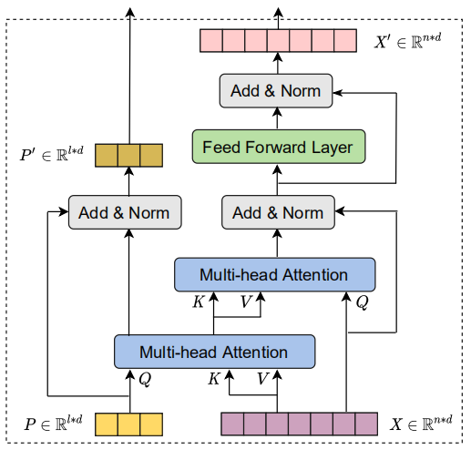

2021
-

Scaling Transformer
Scaling model sizes, datasets and the total computation budget has been identified as a reliable approach to improve generalization performance on several machine learning tasks. Here, we are going to discuss a paper called “Scaling Laws for Neural Machine Translation” published by Google Research in 2021 where the researchers study the effect of scaling the transformer depths on the performance. …
-
BiT: Bidirectional Training
BiT stands for “Bidirectional Training” which is a simple and effective pre-training strategy for neural machine translation. BiT was proposed by The University of Sydney in collaboration with Peking University and JD Explore Academy in 2021 and published in this paper: Improving Neural Machine Translation by Bidirectional Training. …
-
Dataset-Length Bias
Neural Machine Translation (NMT) is known to suffer from a beam-search problem: after a certain point, increasing beam size causes an overall drop in translation quality. This effect is especially in long sentences. A factor that strongly contributes to the quality degradation with large beams is dataset-length bias which means that NMT datasets are strongly biased towards short sentences. …
-

Hinted Back-Translation
HintedBT is a family of techniques that provides hints through tags on the source side and target side to the Back-translation mechanism to improve the effectiveness of the provided monolingual data. These techniques were proposed by Google Research in 2021 and published in their paper: HintedBT: Augmenting Back-Translation with Quality and. …
-
Dr. NMT
DrNMT stands for “Discriminative Reranking for Neural Machine Translation” which is a re-ranking framework created by Facebook AI in 2021 and published in this paper: Discriminative Reranking for Neural Machine Translation. The official implementation for this paper can be found in this GitHub repository: DrNMT. …
-

Luna: Linear Attention Mechanism
Luna stands for “Linear Unified Nested Attention” which is a novel attention mechanism that yields linear time and space complexity as opposed to standard attention mechanism proposed in the Transformer architecture that yields quadratic time and space complexity. Luna was proposed by FAIR in 2021 and published in the paper under the same name: “Luna: Linear Unified Nested Attention”. The official code for this paper can be found in the following GitHub repository: fairseq-apollo. …
-
REDER
REDER stands for “Reversible Duplex Transformer” which is a Transformer model where its both ends can simultaneously input and output a distinct language thus enabling reversible machine translation by simply flipping the input and output ends. REDER was proposed by ByteDance AI lab in 2022 and published in their paper: Duplex Sequence-to-Sequence Learning for Reversible Machine Translation. The official code for this paper can be found in the following GitHub repository: REDER. …
-
Hallucination
As NMT systems are built on deep learning methodology which means that they exhibit both the strengths and weaknesses of the approach. For example, NMT systems make the best use of very large datasets but on the other hand they are poorly understood. For example, in many commercial translation systems, entering repeated words many times occasionally results in strange translations like this one from Vice’s blog post: …
2020
-

Very Deep Transformer
Using a simple yet effective initialization technique that stabilizes training, researchers at Microsoft Research were able to build very deep Transformer models with up to 60 encoder layers. These models were explored in this paper published in 2020: Very Deep Transformers for Neural Machine Translation. The official code for this paper can be found in the following GitHub repository: exdeep-nmt. …
-

Linformer: Linear Transformer
Linformer is an efficient version of the transformers proposed by Facebook AI in 2020 and published in this paper: “Linformer: Self-Attention with Linear Complexity”. The official code for this paper can be found in the FairSeq official GitHub repository: linformer. Linformer can perform the self-attention mechanism in the transformer in linear time $O\left( n \right)$ instead of a quadratic time $O\left( n^{2} \right)$ in both time and space. In this paper, the publishers demonstrate that the self-attention mechanism can be approximated by a low-rank matrix. …
-

Reformer: Efficient Transformer
Reformer is an efficient version of the transformers proposed by Google Research in 2020 and published in this paper: “Reformer: The efficient Transformer”. The official code for this paper can be found in this GitHub repository: reformer-pytorch. In this paper, the authors introduced two techniques to improve the memory efficiency of Transformers while keeping the same great performance. …
-
Evaluation Metrics
Machine Translation models translate a given sentence by searching for the sentence that best suits a given criterion. However, all approaches have to be evaluated to quantify the quality and accuracy of the produced translations. Naturally, the best method would be to have human experts rate each produced translation (Candidate) in order to evaluate the whole MT system based on the reference translations. …
2019
-

CMLM Transformer
CMLM stands for “Conditional Masked Language Modeling” Transformer which is an encoder-decoder Transformer architecture trained with a masked language modeling (MLM) training objective and uses “masked-predict” algorithm for decoding. This model was proposed by FAIR in 2019 and published in their paper: Mask-Predict: Parallel Decoding of Conditional Masked Language Models. The official code for this paper can be found on Facebook Research’s official GitHub repository: facebookresearch/Mask-Predict. …
-
Align & Translate with Transformers
In this part, we are going to take a deep look into this paper: Jointly Learning to Align and Translate with Transformer Models which was published by Apple Inc. in 2019. The official code for this paper can be found in the official Fairseq GitHub repository: fairseq/joint_alignment_translation. …
-

Transformer + Noisy Channel
Transformer model directly estimates the posterior probability of a target sequence $y$ given a source sequence $x$. The Noisy Channel model operates in the reverse direction. It estimates the likelihood probability $p\left( x \middle| y \right)$ with the help of a language model probability $p\left( y \right)$. To do so, the Noisy channel model applies the Naive Bayes Rule: …
-
Tagged Back-Translation
Tagged BT stands for “Tagged Back-Translation” which is a simpler alternative Noised BT, consisting of tagging back-translated source sentences with an extra token. Tagged BT was proposed in 2019 by Google and published in this paper: Tagged Back-translation. Tagged BT results on WMT outperform noised BT in English-Romanian and match performance on English-German: …
-
Robust NMT
Neural machine translation (NMT) often suffers from the vulnerability to noisy perturbation in the input. Google AI has proposed an approach to improving the robustness of NMT models called AdvGen published in 2019 in their paper: Robust Neural Machine Translation with Doubly Adversarial Inputs. AdvGen consists of two parts: …
-
SB-NMT: Synchronous Bidirectional NMT
SB NMT stands for “Synchronous Bi-directional Neural Machine Translation” which is a model proposed by the the University of Chinese Academy of Sciences in 2019 and published in their paper under the same name: Synchronous Bidirectional Neural Machine Translation. The official code for this paper can be found on the following GitHub repository: sb-nmt. …
-
The Evolved Transformer
The Evolved Transformer (ET) ia an evolved version of the Transformer architecture created by applying Neural Architecture Search (NAS) algorithm over the standard architecture.The Evolved Transformer was proposed by Google Brain in 2019 and published in their paper with the same name: The Evolved Transformer. The official implementation of the Evolved Transformer can be found on the Tensor2Tensor official GitHub repository: tensor2tensor/universal_transformer.py. …
2018
-
Translationese Effect
Translationese is a common term that refers to to translated texts. The fundamental law of translation states that “phenomena pertaining to the make-up of the source text tend to be transferred to the target text” which means that translated texts tend to be simpler and retain some characteristics from the source language. …
-

Context-Aware Transformer
Context-Aware Transformer is a modified version of the Transformer model which is designed to allow the flow of information from the context to the decoder to provide better and more coherent results. Context-Aware Transformer was proposed by Yandex, University of Edinburgh, and University of Amsterdam in 2018 and published in their paper: Context-Aware Neural Machine Translation Learns Anaphora Resolution. …
-

UT: Universal Transformer
In “Universal Transformers”, the researchers from Google extended the standard Transformer architecture to be computationally universal (Turing complete) using a novel, efficient flavor of parallel-in-time recurrence which yields stronger results across a wider range of tasks. This model was proposed by Google AI in 2018 and published in their paper: Universal Transformers. The official code of this paper can be found on the Tensor2Tensor official GitHub repository: tensor2tensor/universal_transformer.py. …
-

RNMT+
RNMT stands for “RNN N-based Neural Machine Translation models” which are the models that used recurrent networks in the architecture. RNMT+ is an enhanced version of RNMT models proposed by Google AI in 2018 and published in their paper: The Best of Both Worlds: Combining Recent Advances in Neural Machine Translation. In this paper, the researchers took a step back and looked at techniques and methods that contributed significantly to the success of recent models and tried to apply them to the RNMT model resulting in RNMT+. …
2017
-

NAT: Non-Autoregressive Transformer
NAT, stands for “Non-Autoregressive Translation”, is an NMT model that avoids the autoregressive property of the decoding and produces its outputs in parallel. NAT was created by Salesforce in 2017 and published in their paper: “Non-Autoregressive Neural Machine Translation”. The official code for this paper can be found on the official Salesforce GitHub repository: nonauto-nmt. …
-

Unsupervised Machine Translation with Monolingual Data
The second model proposed in this area was created by Facebook AI in 2017 and published in this paper: “Unsupervised Machine Translation Using Monolingual Corpora only”. The proposed system follows a standard encoder-decoder architecture with standard attention mechanism assisted by a back-translation procedure where …
-
UNdreaMT
The first model proposed in this area was created under the supervision of Cho in 2017 and published in this paper: “Unsupervised Neural Machine Translation”. The official code of this paper can be found in the following GitHub repository: UNdreaMT. The proposed system follows a standard encoder-decoder architecture with an attention mechanism where: …
-

MUSE
MUSE or “Multilingual Unsupervised and Supervised Embeddings” is a framework created by Facebook AI in 2017 and published in this paper: Word Translation Without Parallel Data. The official implementation of the framework can be found in this GitHub repository: MUSE. …
-
Transformers
Transformer architecture is a novel architecture for encoder-decoder paradigm created in an attempt to combine all good things from Seq2Seq architecture and ConvS2S with attention mechanisms. Transformer was proposed by a team from Google Research and Google Brain in 2017 and published in a paper under the name: “Attention is all you need”. The official code for this paper can be found on the Tensor2Tensor official GitHub repository: tensor2tensor. …
-
SMT Vs NMT
Although the NMT had made remarkable achievements on particular translation experiments, researchers were wondering if the good performance persists on other tasks and can NMT indeed replace SMT. Accordingly, Junczys-Dowmunt et al. who performed experiments on the “United Nations Parallel Corpus” which involves 15 language pairs and 30 translation directions, and NMT was either on par with or surpassed SMT across all 30 translation directions in the experiment measured through BLEU scores which proves how promising NMT is. …
-

ConvS2S
One of the major defects of Seq2Seq models is that it can’t process words in parallel. For a large corpus of text, this increases the time spent translating the text. CNNs can help us solve this problem. In this paper: “Convolutional Sequence to Sequence Learning”, proposed by FAIR (Facebook AI Research) in 2017. The official repository for this paper can be found on fairseq/convs2s. …
2016
-
Gated CNN
One of the major defects of Seq2Seq models is that it can’t process words in parallel. For a large corpus of text, this increases the time spent translating the text. CNNs can help us solve this problem. In this paper: “Language Modeling with Gated Convolutional Networks”, proposed by FAIR (Facebook AI Research) in 2016. …
-

Dual Learning for Machine Translation
Dual learning is a RL mechanism used mainly for machine translation, proposed in 2016 by the University of Technology in China in collaboration with Microsoft and published in this paper: “Dual Learning for Machine Translation”. One of the limitation of machine translation systems is the limited parallel data due to the the lack of human labeling. The dual-learning mechanism can enable an NMT system to automatically learn from monolingual data (in both the source and target languages) through a dual-learning game. …
-
GNMT: Google's NMT
GNMT stands for “Google’s Neural Machine Translation” which is a deep machine translation model proposed in 2016 by Google Research and published in this paper: Google’s Neural Machine Translation System: Bridging the Gap between Human and Machine Translation. The official code for this paper can be found in the TensorFlow’s official GitHub repository: TensorFlow/GNMT. …
2015
-
Back-translation
Back-translation is a semi-supervised mechanism proposed in this paper: “Improving Neural Machine Translation Models with Monolingual Data” by the Rico Sennrich and the University of Edinburgh in 2015 that uses a reverse translation system make the best use out of target-side monolingual data. …
-
Fusion
The fusion technique is proposed by the University of Montreal in 2015 and published in this paper: “On Using Monolingual Corpora in Neural Machine Translation”. The idea about fusion is to integrate a language model (LM) trained only on monolingual data (target language) into an NMT system. Since this paper was published in 2015, it uses the encoder-decoder architecture. So, the integrating part will be done on the decoder’s side. …
2014
-
Seq2Seq
Sequence-to-sequence (seq2seq) models or encoder-decoder architecture, created by IlyaSutskever and published in their paper: Sequence to Sequence Learning with Neural Networks published in 2014, have enjoyed great success in a machine translation, speech recognition, and text summarization. …
-

Attention Mechanism
A potential issue with the Seq2Seq approach is that a neural network needs to be able to compress all the necessary information of a source sentence into a fixed-length vector (context vector). This may make it difficult for the neural network to cope with long sentences, especially those that are longer than the sentences in the training corpus. This paper: “On the Properties of Neural Machine Translation: Encoder–Decoder Approaches” showed that indeed the performance of a basic encoder–decoder deteriorates rapidly as the length of an input sentence increases. …